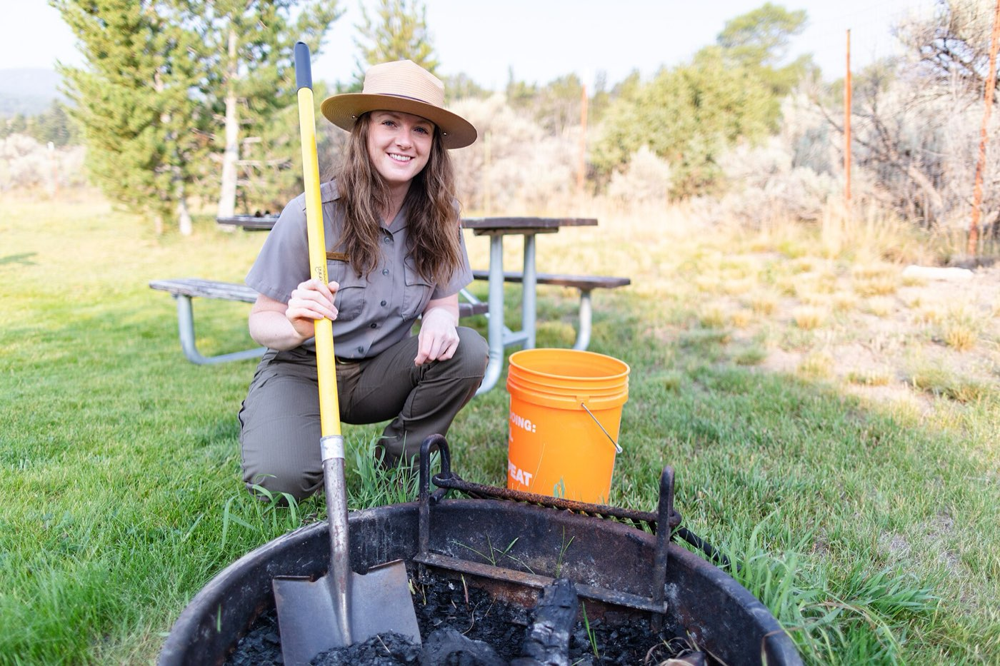

Solo-patrol calls
- The overlook, mid-August. A visitor goes down in line at the scenic pullout: gray, sweating, a hand on his sternum. You’re the only responder for forty minutes, and the first five matter most.
- A mile up the nature trail. The heat call turns out to be a hiker who’s stopped sweating and stopped making sense. That’s heat stroke — cool aggressively right there, with whatever water the crowd is carrying.
- The creel check that changes. The angler you stopped mentions the snake only when you notice the swelling. Sharpie the edge, note the time, jewelry off — and none of the folklore.
Patrol-truck reading order
Ordered by what visitors actually do:
- Patient Assessment — the first-on-scene system, run alone until backup
- Medical Emergencies — the visitor cardiac — denial, aspirin, and early help
- Heat Illness — trailhead to heat stroke, and the cool-first doctrine
- Bites & Stings — snake calls without the folklore
- Evacuation — sizing an incident when you are the resources
Then pressure-test it
Interactive scenarios — one decision at a time, tempting mistakes included, debrief at the end:
- It’s Not Indigestion — the parking-lot collapse, start to finish
- Cool First — aggressive cooling before anyone drives anywhere
- Sharpie on the Leg — mark the edge, watch the clock
The certification question, honestly. “Wilderness First Aid” isn’t a regulated credential. No government body defines what a WFA card means — it means whatever the company that printed it says it means. What counts in front of a patient is whether you can do the work. This course teaches the work, free, and issues a record of completion — not a certificate, and we won’t pretend otherwise. Agency training requirements — academy medical blocks, in-service standards, whatever your department mandates — stand untouched. This is prep before the academy and fluency between in-services, not a line on a training record. If nobody requires you to hold a card, what you need are the skills, not the laminate.
What this is
Fifteen lessons, a 40-question knowledge check, sixteen practice scenarios, a printable field reference card, and a kit checklist. Free, no account, nothing recorded about you, source on GitHub. It teaches decision-making, not hands-on skill — practice the hands-on parts on a real, padded, complaining friend.
Others who answer the call: ski patrol volunteers & resort safety staff · SAR candidates & volunteers · volunteer firefighters in rural & wildland-urban interface districts